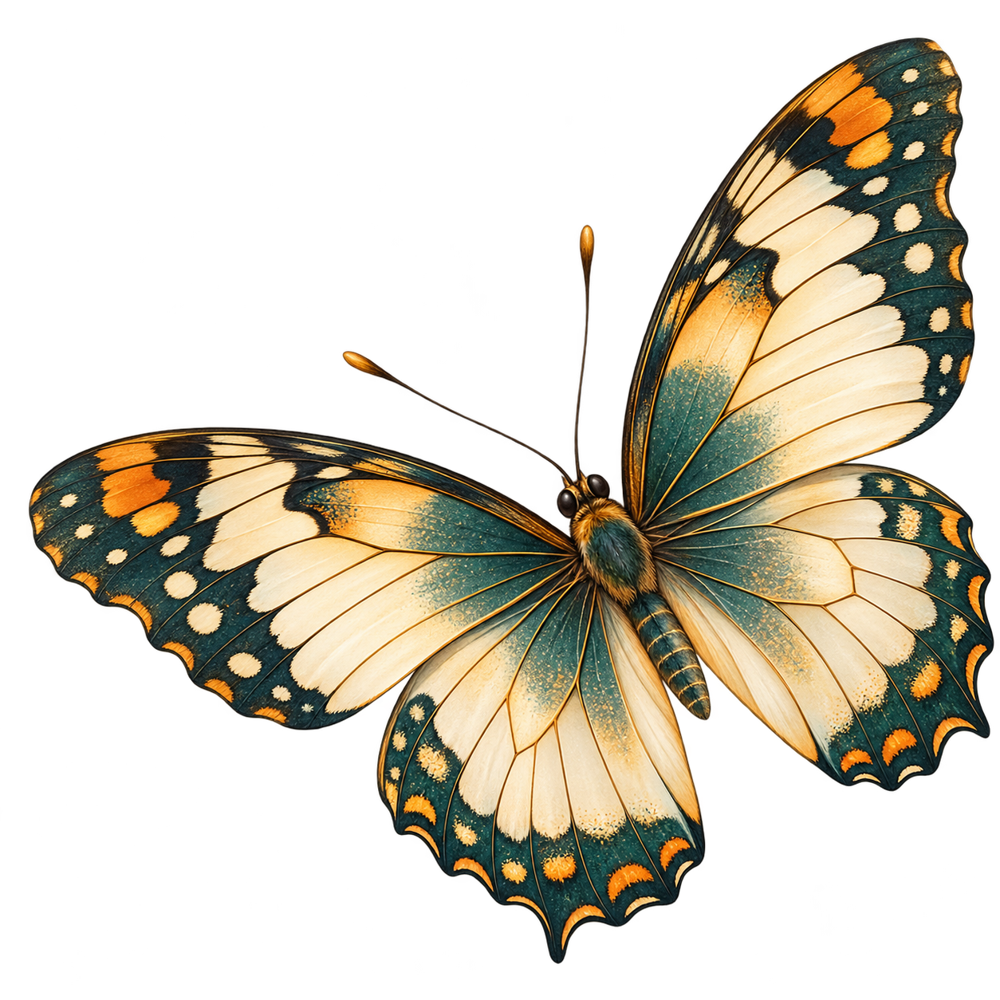

Which States Have More Sightings?
Darker green states have more recorded insect sightings. Hover over a state to see its total.
Source: Atlas of Living Australia (2023–2025). Combined observations from three insect groups.

Australia is home to an amazing variety of insects. Explore where insects are recorded, how sightings change throughout the year, how rainfall compares with these patterns, and which Australian insects are at risk of disappearing.
From colourful butterflies to native bees and dragonflies, insects play important roles in Australia's ecosystems.
Let's begin by looking at three major insect groups: butterflies and moths, bees, ants and wasps, and dragonflies and damselflies.
This chart compares the number of insect sightings recorded between 2023 and 2025.
Source: Atlas of Living Australia (2023–2025). These counts represent recorded sightings, not the actual number of insects in Australia.
Butterflies and moths have the most recorded sightings among these three insect groups. However, this does not necessarily mean they are the most common insects in nature.
The bar chart shows which insects have the most recorded sightings. But insect diversity is about much more than observation totals.
Insects belong to different groups, and each group contains smaller scientific families. Understanding these families helps us appreciate the variety of Australia's insect life.
This circular diagram is a sunburst chart. Think of it as a family tree for insects.
The inner ring shows butterflies and moths, beetles, bees, ants and wasps, and dragonflies and damselflies.
The outer ring divides each group into scientific families. Larger sections contain more species-level entries in the checklist.
Try it: Hover over any section to discover its group or family name and count.
Source: Atlas of Living Australia insect checklist, downloaded 10 October 2026. The original checklist CSV is loaded directly into Vega. The chart shows checklist composition, not insect abundance in nature.
Each major insect group contains many smaller families. Insect diversity cannot be understood only by comparing how often people record different insects.
Now that we have explored these groups, where across Australia are insects being recorded?
Australia's landscapes include tropical rainforests, dry deserts, coastal areas, and temperate forests.
Insect sightings are not spread evenly across the country. Compare the two maps below to see the difference between state totals and individual sighting locations.
Darker green states have more recorded insect sightings. Hover over a state to see its total.
Source: Atlas of Living Australia (2023–2025). Combined observations from three insect groups.
Each coloured dot represents a sampled insect sighting. Different colours represent different insect groups.
Source: Atlas of Living Australia (2023–2025). Balanced sample of 5,850 observations. Dot density is not insect population density.
Queensland has the highest number of insect sightings in this dataset. The point map also shows many records around Australia's coastal areas.
Areas with fewer sightings may simply have fewer people recording insects. The maps show where insects were observed, not necessarily where the most insects live.
We have explored where insects are recorded across Australia. Next, let's investigate how their sightings change throughout the year.
Australia's seasons bring changes in temperature, rainfall, and environmental conditions that can affect insect activity.
This heatmap compares monthly sightings for four insect groups between 2023 and 2025.
Each coloured cell represents one insect group in one month. Darker colours mean more recorded sightings.
Source: Atlas of Living Australia monthly summary (2023–2025). Includes butterflies and moths, bees, ants and wasps, dragonflies and damselflies, and beetles. Counts show recorded observations, not actual insect abundance.
Some months have more recorded sightings than others. Butterflies and moths show particularly high totals in several months in this dataset.
However, seasonal patterns can be influenced by weather, insect activity, and the number of people submitting observations.
We've seen when insects are recorded most often. Could rainfall help us understand these seasonal patterns?
Rainfall is an important part of Australia's environment. It can affect plant growth, insect habitats, and the conditions in which insects live.
But do wetter months also have more recorded insect sightings?
This radar chart compares average monthly rainfall across Australia with insect sightings recorded between 2023 and 2025.
Each point around the circle represents a month from January to December. Blue represents rainfall, while green represents insect sightings.
Sources: Australian Bureau of Meteorology (BOM) and Atlas of Living Australia (ALA), 2023–2025. Rainfall represents the average for each calendar month over the three years. Insect sightings are combined across the same period. Both are shown as a percentage of their own highest month (100%) to compare seasonal patterns rather than raw totals.
Rainfall and insect sightings both change throughout the year, but their busiest months do not always match.
This comparison does not prove that rainfall causes changes in insect sightings. Temperature, habitat, insect behaviour and observation effort also matter.
The radar chart shows when rainfall and insect sightings change. But do all insect groups show the same difference between wetter and drier months?
To explore this, we ranked Australia's calendar months by their average rainfall between 2023 and 2025.
The six wetter months were January, February, March, April, November and December. The remaining six months were classified as drier months.
The diagram below compares recorded sightings between these two sets of months for each insect group.
How to read it: Gold dots represent drier months and green dots represent wetter months. A value of 100% means the group's average monthly number of sightings.
Values above 100% mean more records than that group's average month; values below 100% mean fewer. Hover over a dot for the exact average number of records.
Sources: Australian Bureau of Meteorology, Australian rainfall monthly records (2023–2025), and Atlas of Living Australia, monthly insect observations (2023–2025). Both original CSV files are loaded directly by Vega. Wetter and drier calendar months are identified from the three-year average national rainfall. Insect observation values combine records from 2023–2025 for each calendar month. Each insect group is indexed against its own twelve-month average. Differences represent patterns in records, not measured population changes. The chart does not establish causation.
All four insect groups have more recorded sightings in the six wetter calendar months than in the six drier months in this dataset.
The size of the difference varies between insect groups. Beetles and dragonflies and damselflies show particularly large relative differences.
However, wetter months also overlap with warmer times of year in much of Australia. The differences could reflect season, insect activity or the number of people recording insects, rather than rainfall alone.
We've compared seasonal conditions. But what happens when we look at insect observation records across more than four decades?
Australia's biodiversity records provide a window into how insects have been documented over time.
The Atlas of Living Australia brings together observations from researchers, museums and community contributors. These records allow us to explore long-term patterns across insect groups.
This streamgraph shows annual recorded observations from 1980 to 2025 for butterflies and moths, bees, ants and wasps, dragonflies and damselflies, and beetles.
Each coloured flowing band represents one insect group. The thicker the band, the more observation records were reported for that group in that year.
Source: Atlas of Living Australia (ALA), official annual occurrence-count API, 1980–2025. Four original ALA JSON responses are loaded directly by Vega. Records are filtered to Australia and the four selected insect orders. Counts represent biodiversity records, not estimated insect populations.
The number of recorded insect observations has increased considerably in recent decades, particularly for butterflies and moths.
However, an increase in observation records does not necessarily mean that insect populations have increased. Changes in survey effort, digital databases and citizen science participation may also influence the number of records collected.
Next, let's explore insect life in Melbourne's urban green spaces.
Insects are an important part of urban ecosystems, including parks, gardens and other green spaces.
The City of Melbourne's Little Things that Run the City dataset provides a closer look at insects surveyed across Melbourne.
This Sankey diagram connects insect groups to the Melbourne locations where their records were collected.
The coloured bands represent beetles, flies, true bugs, and bees, ants and wasps.
How to read the diagram: Follow a coloured band from an insect group on the left to a location on the right. Thicker bands represent more records linking that group to that place.
Source: City of Melbourne, Insect Records in the City of Melbourne from Little Things that Run the City. The visualisation loads the original CSV file directly into Vega and calculates relationships in memory. The bands show numbers of survey records, not total insect populations or estimates of insect abundance.
This diagram allows us to compare the relationships between insect groups and individual Melbourne green spaces. Different locations contribute different combinations of records.
Differences may reflect survey methods, habitat characteristics and sampling effort. They do not necessarily mean a park has more or fewer insects living there.
Urban insect communities are one part of Australia's wider biodiversity. Next, let's look at the insects officially recognised as threatened.
Australia's insects face pressures such as habitat loss and environmental change. Some insects are officially recognised as threatened under Australian environmental legislation.
By examining government conservation records, we can compare the number of threatened insect taxa associated with different Australian states and territories.
This proportional-symbol map uses circles to compare government-listed threatened insect taxa across Australia. Larger circles indicate more listed taxa associated with a state or territory.
Source: Australian Government Species Profile and Threats Database (SPRAT), extracted 28 August 2026. The map includes records classified as Insecta and counts distinct scientific-name entries marked "Yes" for each state or territory in the source dataset. Circle locations are representative state positions, not actual insect observation coordinates. Counts represent government-listed taxa, not insect populations. A taxon can be associated with more than one state.
Threatened insects are associated with different regions across Australia. Their conservation depends on understanding the environmental pressures affecting species and the places they inhabit.
However, the number of listed taxa in a state does not tell us how many insects live there or whether that state has greater overall biodiversity.
The map only represents records contained in the SPRAT extract, and states without an explicit "Yes" are not necessarily places where the taxa are absent.
Having explored where threatened insects are listed, we can now examine how serious their official conservation statuses are.
Insects help keep Australia's natural environments healthy. They pollinate plants, recycle nutrients, and provide food for birds and other animals.
However, some Australian insects face serious threats to their survival. Australia's official threatened species list helps identify insects that may need protection.
This chart compares different insect groups on the Australian Government's threatened species list.
The colours show how serious the threat is, while the bars show the number of listed entries in each group.
Sources: Australian Government Species Profile and Threats Database (SPRAT), extracted 28 August 2026; and Atlas of Living Australia insect checklist, downloaded 10 October 2026. The chart combines the two original datasets using scientific names. Some entries refer to subspecies rather than entire species. Only entries matched between the two datasets are shown. Unmatched government-listed insects are excluded.
Critically Endangered: Facing an extremely high risk of extinction.
Endangered: Facing a very high risk of extinction.
Vulnerable: Facing a high risk of extinction.
Some Australian insects are at risk of disappearing, which could affect the ecosystems that depend on them.
Protecting insect habitats and learning more about Australia's biodiversity are important steps towards helping these species survive.
The number of threatened-list entries does not tell us what percentage of all Australian insects are threatened. It only shows the matched entries in these two datasets.